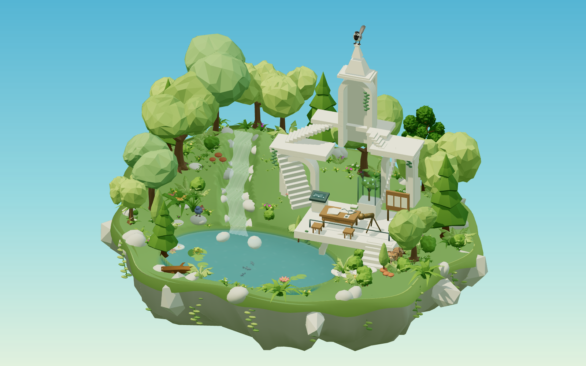

01 / INTERACTIVE EXPERIENCE
BIRD-8 · 一段鸟生
把“我像哪只小鸟”的好奇，变成认识真实鸟类的开始。从情境题、结果阅读到鸟类图鉴，做一个免费、可以分享的小入口。
先认识一只，再愿意了解更多
多个小鸟同时出现时，阅读容易失去焦点。我把结果调整为一个完整展开的主结果、两个备选，让阅读先有焦点，也保留继续探索的空间。
我的判断主结果更明确，不代表匹配更科学。它是认识自己与小鸟的趣味入口；鸟类生态事实与拟人故事分开表达，每只鸟都附懂鸟和 eBird 资料入口。
从 16 种，到 18 种
加入红腹锦鸡和玄凤鹦鹉，沿用原有 36 道题。先核对现有选项是否支持新增结果，而不是为了扩充物种继续增加答题负担。
我的角色与 AI 分工
我负责产品初衷、内容方向、物种选择、体验审阅和发布取舍；AI 辅助实现前端、SVG 路径、资料整理与检查。通过朋友试用和逐图反馈持续修改。
36情境题，扩充时保持原题
18鸟种，均有图鉴与资料入口
1 + 2完整主结果与两个备选
视觉迭代：从色块数量，到轮廓正确
新增两只鸟时，一味增加色块没有改善体态。改用文字提示词生成的插画作参考，重建 SVG 曲线，再逐只处理头身衔接、翼缘、长尾和足部。白鹭、夜鹭、黑脸琵鹭的趾型分别核对，玄凤保留两前两后的足趾。
图鉴、结果和保存卡片共用矢量插画。卡片统一蓝绿色整底，检查透明区域和手机排版，避免网页上看不出的残片出现在导出图中。
加载优化：找到真正被下载的内容
朋友偶发打不开链接时，排查发现结果页仍随 HTML 加载旧 Base64 位图库。P0.18 阶段复用已有 SVG，文件从 3,427,681 降至 223,987 bytes，减少 93.47%。
后来为新鸟保留精细路径，P0.27 为 576,226 bytes，本地 gzip 为 191,310 bytes。轻量化减少加载成本，但没有把它描述成已解决所有网络或平台问题。
查看早期反馈、验证和数据口径
早期通过朋友圈和私聊分享。2026-11-03 的同一份 ShareOne 快照记录 498 次访问、329 次平台去重访问；随后复核为 499 / 330。去重口径未进一步核实，不等于自然人数、设备数或完成测试人数。
P0.27 的 19 项代码检查通过，并逐一检查 18 种结果和 18 张保存卡片；这些是工程验证，不是人格测量准确率或正式可用性研究。答卷仅保存在本机，未集中收集完成率、留存或满意度。
目前保持免费。后续希望补充真实网络下的失败记录，以及自愿体验者对题意、结果阅读和科普兴趣的反馈。BIRD-8 尚未发布为小红书小工具。
插画参考图由纯文字提示词生成，生图时未上传真实鸟类摄影作品作为图像参考；SVG 有艺术加工，细节仍以真实鸟类为准。项目最初借鉴八维相关思路，目前为简化的趣味匹配，不能替代专业心理评估。
02 / INTERACTIVE ART
树上花火
把旅行中的一眼，变成可回应的画面
在普洱看见路边像烟花一样的草，我想保留那种细小、轻盈的感觉，而不是做一场铺满屏幕的烟火秀。
我的判断让靠近成为触发，而不把点击按钮放在作品外。大花散开、小花轻摆，用不同强度的反馈保留画面的安静。
实现与分工
基于 p5.js 的花枝与粒子动画，借助 AI 辅助代码实现与修改；我提供意象、交互方向并通过观看和试用判断效果。种子控制初始布局，交互后的散落仍随操作变化。
复盘与学习
“随机”并不等于自然。稳定的构图、大小层次、衰减和留白共同决定节奏。下一步可补触屏引导与减少动态选项；目前没有正式可用性测试结论。
03 / CREATIVE TOOL
OC 灵感骰子
已上线小红书小工具。让角色创作从一张可筛选、可收藏的种子卡开始。
此处是网页原版，可抽取、复制文本与收藏。收藏保存在当前浏览器。独立体验 ↗
先帮创作者动笔，不替创作者定稿
角色构思常卡在“他到底是怎样的人”。工具将印象、内核、外貌、习惯、矛盾、追求、恐惧各抽一项，再配一句核心意象，给出可继续解释的起点。
我的判断不必每次抽取都调用大模型。固定词库配合随机组合，能即时响应、离线使用，也方便控制短句的风格与边界。
实现与分工
代码中现有 579 条词条，分为七个角色维度和一类内核句；前端随机组合，不是实时 AI 生成。AI 辅助实现与整理，人负责设定维度、试用和判断；现有材料不足以逐条认定词条来源，不标为全部手写。
网页原版使用本机 localStorage，复制输出纯文本；已上线的小红书小工具版改为保存卡片图片，并适配客户端存储和手机安全区。词库保持 579 条，不是实时 AI 生成；词条数量也不代表用户规模或使用效果。
复盘与学习
组合可能重复，也可能互相冲突；创作者需要筛选、解释和改写。定向锁定某个维度、重复控制与跨设备收藏是可继续探索的方向，目前未实现。
04 / MAKING OF
小岛作品集：
让空间承载内容，而不只是一张好看的图。

小岛版真实网页场景。点击查看大图。从参考图、动物生成与植物资产整合，到动态网页、物品入口和公开访问。这是一个在视觉表达、交互理解与设备负担之间持续取舍的过程。
LOOK先确定画面语言
用配色与光影参考统一方向，调整树木、石头、水面与花草。生成动物和购买的植物资产共同构成场景，不把资产整合描述为全部手工建模。
FEEL动作要符合直觉
鱼倒游、机械转圈、鸟头大幅扭动都曾破坏自然感。修改方向是更少的鱼、正确朝向、轻微翘尾与局部动作，而不是让所有物体持续运动。
USE找到内容才算成立
入口不明显时，加入开场推进与物品附近的悬浮提示；移除坐标和动物说明等干扰，让浏览者从“看场景”走向“读作品”。
我的判断：流畅不能只靠降低画质
过度降清晰度会损失画面。我更希望从资产负担、渲染分辨率、阴影和动态数量之间寻找平衡；实际表现仍依赖设备与浏览器，不承诺所有设备稳定高帧率。
AI 分工与复盘
我负责参考方向、体验反馈和取舍，AI 辅助网页实现、动作与问题排查。模型生成不等于骨骼动画，能运行也不等于访问稳定；部署中遇到访问拦截后转向 GitHub 托管。
这部分是基于实际制作反馈整理的过程回顾，不是性能基准报告。下一步值得补充同场景、同设备的性能对照与入口可发现性测试。
打开小岛版作品集 ↗